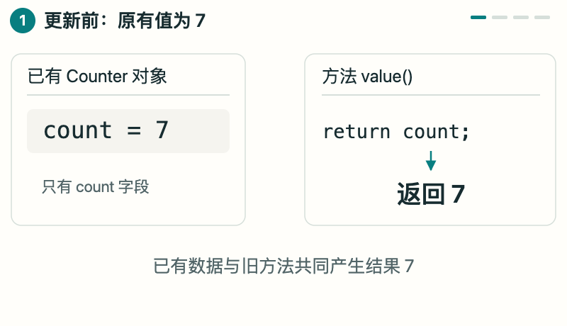
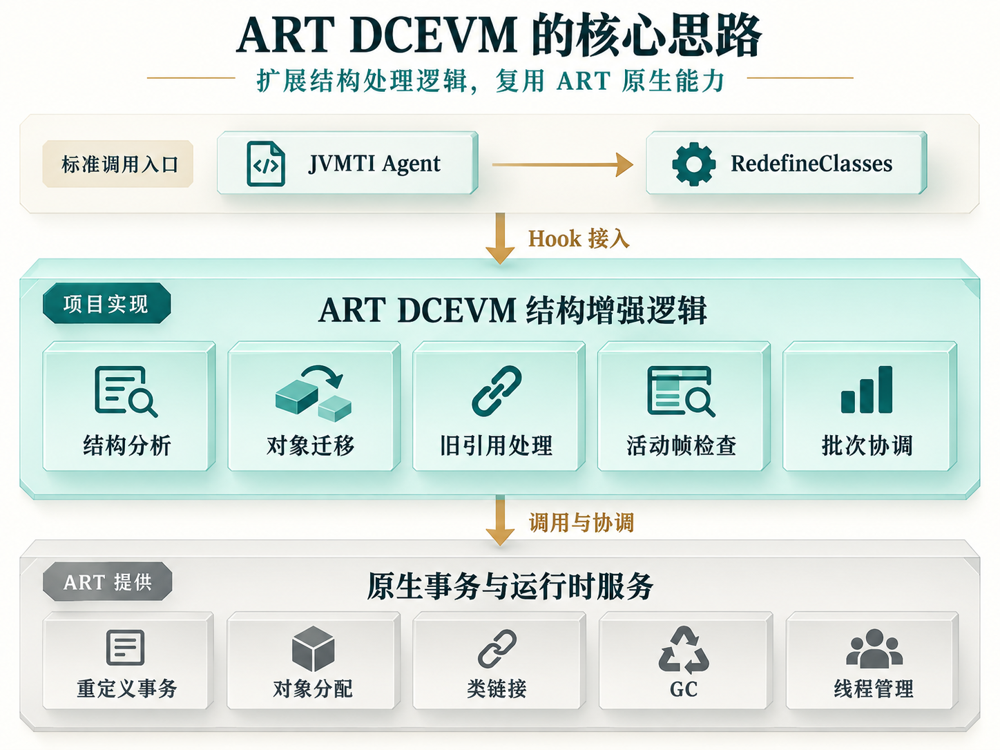
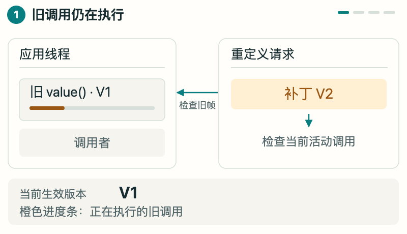

热重载需求与 JVMTI 的结构限制
开发期热重载、Compose 界面热重载，以及调试环境中的热修复验证，都需要在应用运行期间更新代码，并尽量保留已有对象和业务状态。这样，开发者可以在已进入的页面、已加载的数据或已复现的问题现场继续验证修改。但实际变更往往超出方法体：新增一个状态字段、拆分一个方法，或调整类的继承关系，都会改变类结构。
JVMTI 是虚拟机向 Native Agent 提供的工具接口，其中的 RedefineClasses 用于替换已加载类的定义。标准能力支持方法体更新，但不允许增删字段或方法、修改方法签名及改变继承关系，无法完整覆盖上述场景中的结构变化。热替换一旦遇到这类修改，就需要重启应用或采用额外的处理机制，难以延续当前运行状态。具体限制见 JVMTI 规范。
ART DCEVM 针对这一限制，增强 ART 对 RedefineClasses 的处理能力：调用方沿用标准 JVMTI 接口，增强库负责结构变更、对象状态迁移及相关运行时状态的协调，为热重载和补丁工具提供运行时基础。补丁编译与传输、Compose 重组及 remember 状态管理等工作，仍由上层工具完成。
从 Counter 看结构重定义
以 Counter 为例：已有对象的 count 为 7。新定义增加字段 label，并将 value() 改为返回 count * 2。更新需要保留已有的 count = 7，为新增字段提供默认值 null，并让后续调用返回 14。
这次修改同时涉及方法实现和对象布局。运行时需要为旧对象处理新增字段，同时维持原有数据和访问行为。结构重定义的工作因此从替换方法体，扩展到了已有状态的迁移。


已有 Counter 对象的 count 为 7；原方法返回 count，因此结果也是 7。

ART DCEVM 扩展的能力
Counter 展示了字段新增与方法体修改。删除方法还涉及旧反射对象和 JNI ID，调整父类涉及接收者和分派关系，已内联的实现则涉及编译代码与活动调用。不同变化需要相应的运行时处理。
ART DCEVM 在 ART 的重定义处理链中补齐这些处理。调用方仍通过自己的 jvmtiEnv* 提交标准的 jvmtiClassDefinition[]，并接收 JVMTI 错误码；增强库在已适配的运行时上处理结构迁移、旧引用、活动帧及批次原子性。
| 代码变化 | 库提供的增强 | 对应运行语义 |
|---|---|---|
| 字段、方法、构造器增删 | 结构重定义与成员退役 | 兼容字段延续已有值，新字段为零值或 null |
| 类型、签名、static / 实例变化 | 更新成员结构与访问路径 | 相关变化按旧成员退役、新成员创建处理 |
| 访问权限与修饰符变化 | 处理已覆盖的 final、volatile、synchronized、abstract 等语义 | 检查存活对象、已加载子类与旧权限路径 |
| 父类与接口变化 | 协调层级、接收者、字段与类型缓存 | 变化后的访问和类型关系保持一致 |
| 多个相互依赖的类变化 | 完整批次协调与提交 | 可恢复失败发生在提交前，整批保留旧定义 |
接入 ART DCEVM：从依赖配置到类重定义
以下将第一章的 Counter 变更实现为一次重定义请求。示例使用启动时即可调试的应用，最低 API 为 30，ABI 为 arm64-v8a。补丁单独编译为 DEX 后，应用内的调用按以下顺序执行：
- 初始化。
MyAgent.initialize(context)先准备 ART DCEVM 的增强能力，再附加用户 Agent。 - 读取补丁。从资源文件
counter-v2.dex取得新定义的字节，目标仍是应用中已加载的Counter.class。 - 提交替换。
MyAgent.redefine(Counter.class, dex)通过 JNI 桥调用 Agent 的RedefineClasses。 - 检查结果。检查 JVMTI 返回码，再调用原有对象的
value()，观察结果是否由 7 变为 14。
MyAgent 是示例中的封装类：Java 侧负责初始化和传递补丁，Native 侧负责发起 JVMTI 请求。下面依次给出依赖配置和各部分实现。
2.1 依赖配置与构建环境
示例采用 Maven 坐标 com.github.ytlog:artdcevm:latest.release。latest.release 是 Gradle 支持的动态版本选择器，用于从配置的仓库中选择最新 release 版本。依赖声明在 debugImplementation 中，ShadowHook 运行时依赖由 Maven 元数据传递。
正式 Central 版本尚未发布，现阶段可按发布指南使用源码或本地仓库。组件发布后可采用以下依赖声明；项目接入验证后，建议将动态版本替换为实际版本号，以便复现构建。
// settings.gradle：添加到已有仓库配置中
dependencyResolutionManagement {
repositories {
google()
mavenCentral()
}
}// app/build.gradle：合并到已有 Android 应用模块
android {
defaultConfig {
minSdk 30
ndk { abiFilters 'arm64-v8a' }
}
buildTypes {
debug { debuggable true }
}
externalNativeBuild {
cmake { path file('src/main/cpp/CMakeLists.txt') }
}
}
dependencies {
debugImplementation 'com.github.ytlog:artdcevm:latest.release'
}Java 入口放在 app/src/debug/java/demo/。Native Agent 作为独立 target 加入 CMake 工程，并将 jvmti.h 放入 app/src/main/cpp/include/，保留头文件的来源和许可证声明。
2.2 JVMTI Agent 与 JNI 桥接
Agent 在附加时获取 JVMTI 环境并申请 can_redefine_classes 能力。JNI 方法接收目标类和 DEX 字节，构造 jvmtiClassDefinition 后调用 RedefineClasses。DEX 缓冲区的生命周期覆盖整个调用：
#include <jni.h>
#include "jvmti.h"
#include <atomic>
#include <new>
#include <vector>
static std::atomic<jvmtiEnv*> agent_env{nullptr};
extern "C" JNIEXPORT jint JNICALL JNI_OnLoad(JavaVM*, void*) {
return JNI_VERSION_1_6;
}
extern "C" JNIEXPORT jint JNICALL
Agent_OnAttach(JavaVM* vm, char*, void*) {
jvmtiEnv* env = nullptr;
if (vm->GetEnv(reinterpret_cast<void**>(&env),
JVMTI_VERSION_1_2) != JNI_OK) return JNI_ERR;
jvmtiCapabilities caps{};
caps.can_redefine_classes = 1;
if (env->AddCapabilities(&caps) != JVMTI_ERROR_NONE) return JNI_ERR;
agent_env.store(env, std::memory_order_release);
return JNI_OK;
}
extern "C" JNIEXPORT jint JNICALL
Java_demo_MyAgent_redefineNative(JNIEnv* jni, jclass,
jclass target, jbyteArray dex) {
jvmtiEnv* env = agent_env.load(std::memory_order_acquire);
if (!env) return JVMTI_ERROR_INVALID_ENVIRONMENT;
if (!target || !dex) return JVMTI_ERROR_NULL_POINTER;
const jint size = jni->GetArrayLength(dex);
if (size <= 0) return JVMTI_ERROR_ILLEGAL_ARGUMENT;
try {
std::vector<unsigned char> bytes(static_cast<size_t>(size));
jni->GetByteArrayRegion(dex, 0, size,
reinterpret_cast<jbyte*>(bytes.data()));
if (jni->ExceptionCheck()) return JVMTI_ERROR_INTERNAL;
jvmtiClassDefinition definition{};
definition.klass = target;
definition.class_byte_count = size;
definition.class_bytes = bytes.data();
return env->RedefineClasses(1, &definition);
} catch (const std::bad_alloc&) {
return JVMTI_ERROR_OUT_OF_MEMORY;
} catch (...) {
return JVMTI_ERROR_INTERNAL;
}
}app/src/main/cpp/CMakeLists.txt 将上述代码编译为共享库：
cmake_minimum_required(VERSION 3.22)
project(my_agent LANGUAGES CXX)
add_library(my_agent SHARED my_agent.cpp)
target_include_directories(my_agent PRIVATE ${CMAKE_CURRENT_SOURCE_DIR}/include)
target_compile_features(my_agent PRIVATE cxx_std_17)
target_compile_options(my_agent PRIVATE -Wall -Wextra -Werror)Gradle 将生成的 libmy_agent.so 打包到应用中。该库是示例 Agent，ART DCEVM 的增强库为 libartdcevm.so。
2.3 运行时初始化与 Agent 附加
demo.MyAgent.initialize 先初始化 ART DCEVM，再加载 JNI 库并附加用户 Agent。结构重定义请求在初始化成功后发起。该方法通过同步锁和状态标志避免重复初始化，异常由调用方处理：
package demo;
import android.content.Context;
import android.os.Debug;
import com.github.ytlog.artdcevm.api.DcevmRuntime;
public final class MyAgent {
private static boolean initialized;
private MyAgent() {}
public static synchronized void initialize(Context context) throws Exception {
if (initialized) return;
Context app = context.getApplicationContext();
DcevmRuntime.initialize(app); // 先安装 ART DCEVM 增强能力
System.loadLibrary("my_agent"); // 加载本示例的 JNI 桥
Debug.attachJvmtiAgent("libmy_agent.so", null, app.getClassLoader());
initialized = true;
}
public static synchronized int redefine(Class<?> target, byte[] dex) {
if (!initialized) throw new IllegalStateException("Agent not initialized");
if (target == null || dex == null) throw new IllegalArgumentException();
return redefineNative(target, dex);
}
private static native int redefineNative(Class<?> target, byte[] dex);
}DcevmRuntime.initialize(context) 加载增强库、附加其 Agent，完成校准并安装增强路由。仅使用原生方法体替换时，可调用 attachPublicJvmti(context)；initializeCapabilities(context) 用于查询通过独立校验的能力子集。
2.4 补丁编译与 DEX 生成
原始 Counter 的字段 count 为 7，value() 返回该字段：
package demo;
public class Counter {
public int count = 7;
public int value() { return count; }
}补丁保留原包名和类名，新增 label 并修改 value()。补丁源文件位于应用源集合之外的 patch-src/demo/Counter.java，单独编译：
package demo;
public class Counter {
public int count = 7;
public String label = "ready";
public int value() { return count * 2; }
}javac 生成 Java class-file，D8 将其转换为 ART 接收的 DEX。在工程根目录执行以下命令，SDK 路径和 build-tools 版本按本机环境设置：
ARTDCEVM_SDK=/path/to/android-sdk
ARTDCEVM_BUILD_TOOLS=35.0.0
mkdir -p patch-build/classes patch-build/dex app/src/debug/assets
javac --release 8 -encoding UTF-8 -g \
-d patch-build/classes patch-src/demo/Counter.java
"$ARTDCEVM_SDK/build-tools/$ARTDCEVM_BUILD_TOOLS/d8" \
--min-api 30 --lib "$ARTDCEVM_SDK/platforms/android-35/android.jar" \
--output patch-build/dex patch-build/classes/demo/Counter.class
cp patch-build/dex/classes.dex app/src/debug/assets/counter-v2.dex补丁 DEX 以资源文件形式打包，应用源集合保留原始定义。提交时使用已加载的 Counter.class 和补丁字节；通过另一个 ClassLoader 加载同名类会创建不同的类身份，不能替代重定义。D8 的参数说明见官方文档。
2.5 提交重定义并观察对象状态
RedefineDemo.run(context) 创建原始对象，读取补丁 DEX，并通过 MyAgent 发起重定义。该方法可由调试按钮或测试入口调用：
package demo;
import android.content.Context;
import android.util.Log;
import java.io.ByteArrayOutputStream;
import java.io.InputStream;
public final class RedefineDemo {
private RedefineDemo() {}
public static void run(Context context) throws Exception {
Counter existing = new Counter();
Log.i("DCEVM", "before=" + existing.value()); // 7
MyAgent.initialize(context);
byte[] dex;
try (InputStream input = context.getAssets().open("counter-v2.dex");
ByteArrayOutputStream output = new ByteArrayOutputStream()) {
byte[] buffer = new byte[4096];
int read;
while ((read = input.read(buffer)) != -1) {
output.write(buffer, 0, read);
}
dex = output.toByteArray();
}
int error = MyAgent.redefine(Counter.class, dex);
if (error != 0) { // JVMTI_ERROR_NONE = 0
throw new IllegalStateException("RedefineClasses failed: " + error);
}
Log.i("DCEVM", "after=" + existing.value()); // 14
}
}在已适配且支持新增字段的设备上，日志由 before=7 变为 after=14。已有对象的 label 为 null，因为重定义不重新执行构造器和字段初始化代码。提交后创建的对象则按新定义将 label 初始化为 "ready"。
MyAgent.redefine 是示例定义的 JNI 桥；实际请求由 Agent 调用 jvmtiEnv::RedefineClasses 发起。多个相互依赖的类应组成一个定义数组，在同一次调用中提交。批次调用示例见 standard_jvmti_client.cc。
结构重定义的实现原理
ART DCEVM 通过 Hook 扩展标准 RedefineClasses 的处理链，使类结构变化能够随请求提交。新定义、已有对象和旧引用需要协调更新，同时检查活动调用的处理条件；条件满足后整批提交，提交前校验失败则保留旧定义。
3.1 核心难点：新定义与已有状态的一致性
第二章的请求只传入目标类和补丁 DEX，运行时却还要处理 DEX 之外的状态：旧 Counter 对象保留着 count = 7，反射对象和 JNI ID 可能缓存了成员信息，线程也可能正在执行 value()。新定义进入进程时，这些旧状态已经存在。
新增 label 需要可访问的存储，同时不能丢失原字段的值。方法实现更新后，旧缓存或编译代码也可能继续使用原有信息。如果补丁进一步调整继承关系，还需要检查旧接收者，以及字段和数组中已保存引用的类型合法性。
因此，结构重定义必须同时处理访问语义和对象生命周期：成员解析、字段读写与方法调用需要与对应定义一致；跨阶段使用的引用还必须在 GC 移动和并发访问下保持有效。只完成类定义更新，无法满足这些条件。
3.2 核心思路
已有对象和活动调用都由 ART 管理，结构增强需要遵守 ART 的事务、线程和 GC 约束。ART DCEVM 以原生重定义流程为基础，重写和补齐结构分析、对象迁移、旧引用处理、活动帧检查及批次协调逻辑。
项目扩展的是结构变更的处理与协调；对象分配、类链接、GC 和线程管理继续复用设备 ART。调用方也仍使用标准 RedefineClasses 接口，无需另建一套虚拟机基础机制。


3.3 一次重定义请求的处理流程
用户 Agent 将目标 Class 与补丁 DEX 组成定义数组，通过自己的 jvmtiEnv* 发起一次调用。增强路径保留该环境的能力检查和事件归属，将相关类纳入同一批次处理。事务内部的处理顺序见图 3。
进入事务后，首先以转换回调产生的最终 DEX 为依据，分析结构差异并准备迁移表、对象根和临时存储。对象根用于让运行时跟踪引用，避免 GC 移动对象后继续使用旧地址。
准备完成后，在事务持有的线程与 GC 条件下刷新引用，复核旧引用、依赖类和活动调用的处理条件。校验通过后协调迁移与发布，使相关类整批生效；校验失败则在可恢复阶段清理临时资源，保留旧定义。
释放临时资源
整批保留旧定义
迁移对象、更新定义
清理旧访问、完成提交
为使各阶段使用同一批资源，RunState 保存这次重定义的上下文，将迁移计划、对象根、线程与 GC 窗口、DEX 发布记录及清理服务绑定到同一次原始 Run。各阶段据此检查资源归属和使用条件。
3.4 关键机制
上述流程能否正确完成，取决于设备入口是否匹配、迁移期间的对象引用是否有效，以及旧访问路径和活动调用能否继续使用。下面分别说明这些约束如何处理。
A. 标准入口与私有 ABI 适配
复用 ART 服务首先需要确认入口与设备实现匹配。增强库对已校准的命名入口安装 Inline Hook；ART 内部调用未必经过导入表，单靠 PLT Hook 无法保证覆盖。调用原服务时使用保留的原函数入口，避免再次进入代理函数。
ART 私有 ABI 不保证跨版本稳定。适配使用固定源码声明和命名 ELF 符号，再通过公开 JNI/JVMTI 接口观察 Class、字段、方法和线程行为，校验声明与设备实现是否一致。公共算法集中复用，布局与调用差异放入 ABI 或版本实现层；厂商、SDK 和 Build ID 不作为单独的启用依据，也不通过反汇编推算地址与字段偏移。
B. 对象迁移与层级校验
入口适配完成后，需要确定补丁改变了哪些结构，以及原有状态如何对应到新定义。对 Counter 而言，count 映射到兼容字段并保留值 7，新增的 label 在旧对象中取 null。字段类型或 static / 实例属性变化按旧成员退役、新成员创建处理；迁移不重新执行已有对象的构造器。
层级变化需要检查已加载子类的分派关系、存活实例的抽象方法实现、接收者有效性，以及字段和数组中已有引用的类型关系。出现冲突时拒绝请求。通用路径中的层级收窄还依赖接收者、引用存储和活动帧检查，只有这些前提全部满足才能启用。
图 1 展示了字段映射的结果。执行这一计划时，还必须保证参与迁移的对象引用有效，并遵守 GC 的引用写入规则。
C. 线程、GC 与批次原子性
迁移计划确定后，准备时记录的地址仍可能在执行前变化。例如 GC 移动了 Counter 对象，按旧地址复制字段就会访问错误位置。因此，跨阶段引用保存在运行时管理的根中。准备阶段注册强根并预分配迁移表和扫描存储，进入安全窗口后重新读取当前引用，刷新迁移计划和缓存所有者。
暂停线程、排除 GC 和切换线程状态分别具有持有者及嵌套约束。若在持有某个 GC 条件时调用等待同一条件的函数，可能发生自等待；若提交后仍需分配内存，分配失败就可能成为不可恢复故障。发布、资源转交和清理必须遵循同一事务的所有权规则。
多个类的定义组成一个事务。ClassFileLoadHook 可能将方法体补丁转换为结构补丁，因此应在回调结束后验证最终定义。回滚仅适用于可恢复阶段；进入原始 ART 的不可失败提交阶段后，内部故障不能再按普通 JVMTI 拒绝处理。
D. 缓存失效与旧引用语义
除迁移对象数据外，还需要处理访问这些数据的旧引用。此前取得的反射对象或 JNI ID，仍可能保存原有成员信息；MethodHandle、VarHandle、解析缓存和编译调用也有类似问题。实现保留必要的退役记录，对已覆盖路径执行重绑定、失效处理或访问检查，分别处理成员删除、接收者失效和权限变化。这些操作与对象迁移在同一次事务中协调完成。
成员删除后重新添加，即使名称相同，也不能直接恢复旧引用的有效性。已创建句柄的访问授权与后续可见性变化同样需要分别处理。回归用例按反射、JNI、句柄和编译调用等访问路径验证；退役元数据的保留与回收则影响长期内存开销。
E. 编译代码失效与活动帧恢复
旧访问路径之外，还需要处理正在执行的旧代码。如果 Counter.value() 已被内联到调用者中，更新目标方法并不会自动改写这个活动调用的执行状态。线程暂停后，恢复执行仍需确定当前 PC，以及外层方法和内联方法的 Dex 寄存器能否从栈与机器寄存器中还原。
实现通过设备栈遍历、CodeInfo 和 StackMap 检查当前 PC 的恢复信息。在路径已校准、信息完整且执行条件满足时，协调去优化与提交；否则拒绝变更并保留旧定义。活动的非调试 AOT 帧目前不支持即时去优化，需要等待旧调用结束、帧退出后重新验证和提交。


左侧是调用栈：调用者正在等待旧 value() 返回。橙色进度条表示旧调用还没有执行完。

3.5 风险与适用边界
按本文的普通应用接入方式，Agent 只能附加到启动时即可调试的进程，适用于开发期热重载和内部补丁验证；普通非 debuggable Release 包的线上热修复不在这一接入范围内，平台条件见 ART TI 文档。补丁版本匹配、加载策略，以及成功提交后的业务回退，仍需上层工具设计。
这些机制同时依赖 ART 的内部实现、资源生命周期与执行状态，风险主要集中在 ABI 变化、优化代码覆盖和长期运行成本。单项方法替换或 Host 测试通过，只能说明对应路径满足预期；完整结构事务仍需在目标设备上验证组合行为。
| 风险类别 | 主要影响 | 处理方式 |
|---|---|---|
| ART 更新与 ABI 差异 | 同一系统版本也可能改变符号、声明或缓存协议 | 能力按实际校准启用；更新后重新验证，不按机型名单放行 |
| 生命周期与锁顺序 | 自等待、死锁、失去 GC 根或过晚清理 | 准备与最终窗口分离，要求同一事务所有权；新适配组合进行设备端事务验证 |
| 优化执行与覆盖缺口 | 未覆盖的内联、并发、回调或旧引用路径沿用错误事实 | 按实际执行形态扩展回归；无法确认恢复的活动帧拒绝 |
| 性能与长期资源 | 暂停成本、解释执行回退、退役元数据保留和卸载压力 | 长期前台、GC 与 ClassLoader 回归；部分回退仍有进程级影响 |
| 业务语义变化 | 新字段默认值不满足业务假设，旧引用触发链接或访问异常 | 运行时保留已定义语义，调用方明确初始化与错误处理策略 |
新增字段在旧对象中为 null 是迁移语义，业务代码仍需处理相应的初始化要求。活动帧缺少恢复信息时，运行时则拒绝提交。具体限制见 LIMITATIONS.md。
3.6 后续工作
针对上述兼容性、执行覆盖和资源成本问题，后续工作分为以下几项。
- 跨版本结构事务。完善各版本的成员迁移、层级变更、对象根、定义发布和资源清理。设备回归覆盖成功提交、提交前拒绝与失败回滚。
- 优化代码与旧引用覆盖。扩展 AOT/JIT 内联、并发活动帧、同类竞争、转换回调及句柄访问用例，检查执行结果和拒绝后的旧状态。
- 提交开销。测量重定义停顿，缩小需要回退执行的范围，完善优化代码恢复策略。缺少恢复信息的非调试 AOT 帧继续采用拒绝策略。
- 资源回收与长期稳定性。增加旧引用释放、ClassLoader 卸载、后台 GC 和多轮重定义测试，观察退役元数据与内存占用。
- 诊断与接入。在能力报告中区分已支持的变化类型、拒绝阶段和具体原因，为补丁生成与重试策略提供依据。